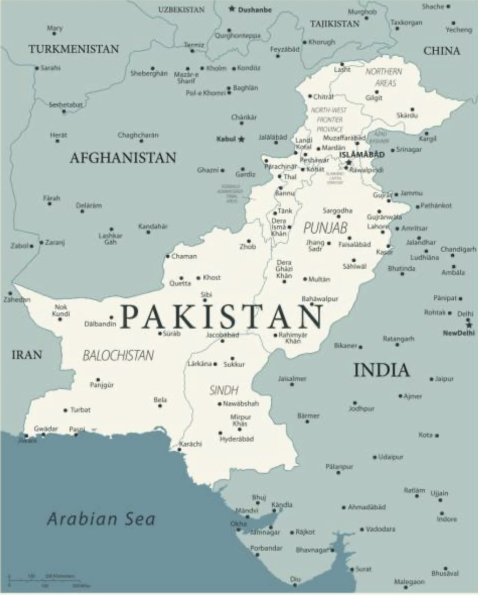

History of Pakistan
- Pakistan gained independence on August 14, 1947.
- Muslims living under the control of British rulers in India were not allowed to practice their religion freely. They were unable to easily move from one place to another. They wanted the right to speak their opinion and face no restrictions in terms of embracing their culture, pursuing higher education, and finding employment. These muslims wanted to have an independent place where they can live their lives freely. This idea of having a free state was proposed to Muslims by llama Iqbal.
- Pakistan came into existence as a result of the Two-Nation Theory. The Two-Nation Theory aimed for the creation of an independent Muslim state in the Muslim-majority regions of British India. This movement for independence was led by the All-India Muslim League under the leadership of Muhammad Ali Jinnah. The independence of Pakistan was brought forth by the Indian Independence Act of 1947 under which independence was given to the Dominion of Pakistan which comprised of West Pakistan (now known as present-day Pakistan) and East Pakistan (now known as Bangladesh). After being awarded separate statehood, the partition involved unparalleled mass migration and loss of life. Pakistan officially drafted its constitution in 1956, and emerged as a declared Islamic republic.


This image depicts the Faisal Masjid in Islamabad, Pakistan. Faisal Masjid is the national mosque of Pakistan.
.PNG)
This image depicts the Badshahi Masjid in Lahore, Pakistan. Badshahi Masjid remains the largest mosque of the Mughal Empire era.